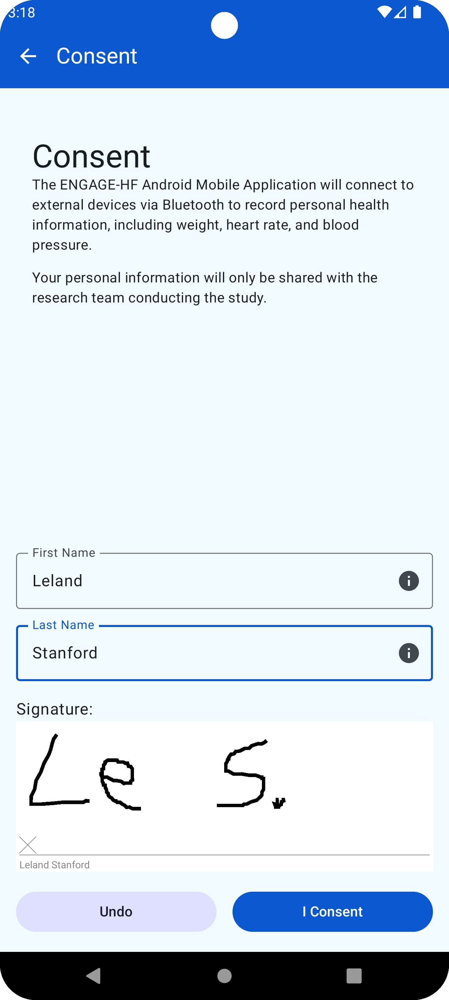
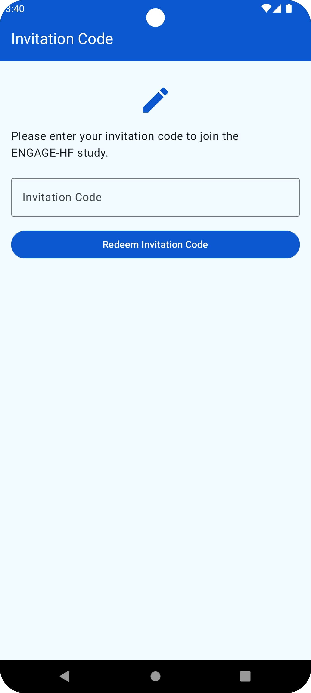
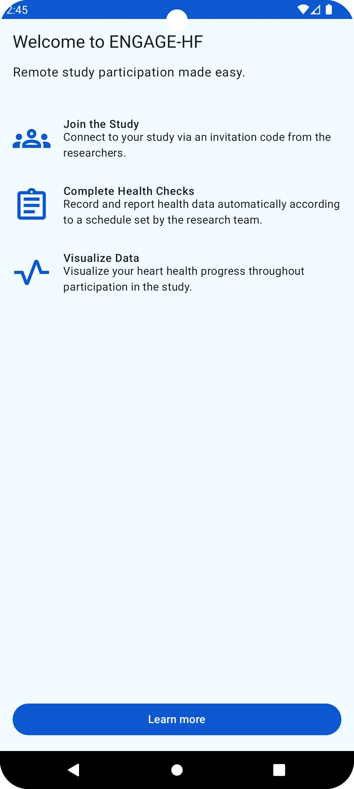
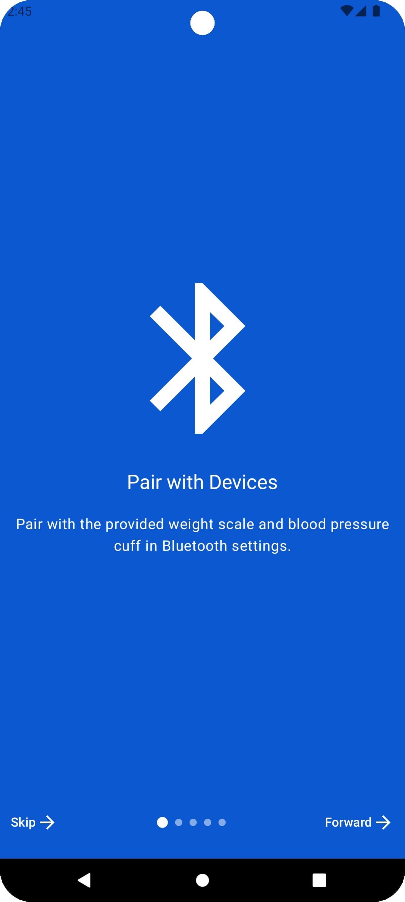
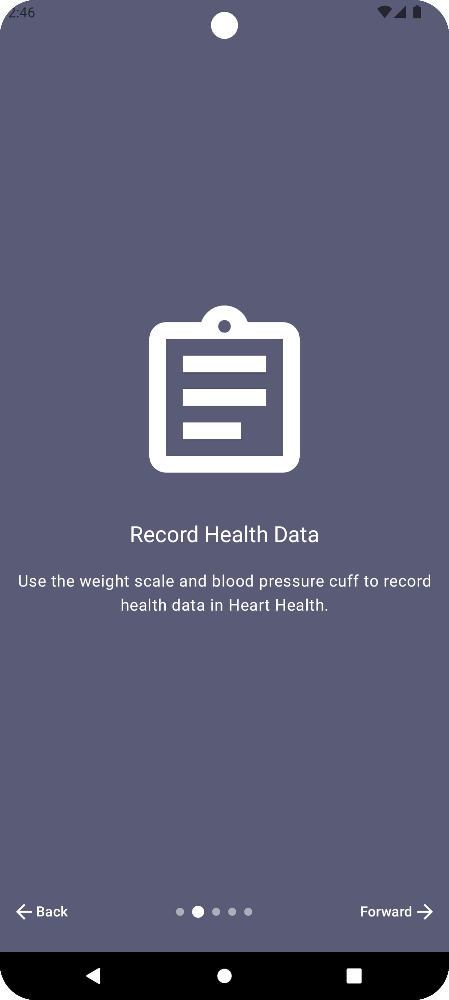

onboarding
This module provides multiple onboarding screens:
Packages
The consent package handles user consent screens, ensuring that users agree to the necessary terms and conditions before proceeding. The consent document gets build by a Markdown Text. The text can be provided via an implementation of the ConsentManager interface. This interface also provides functions to handle the case when the user has consented as well as a consent failure. The Screen can be used anywhere after providing this interface.
The invitation package manages the invitation process, allowing users to join an app. The InvitationCodeScreenData provides all necessary data for the view like the title, the description and the redeem Action. It is provided via a implementation of the InvitationCodeScreen interface. The Screen can be used anywhere after providing this interface.